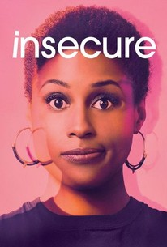
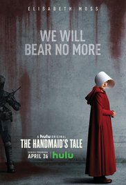
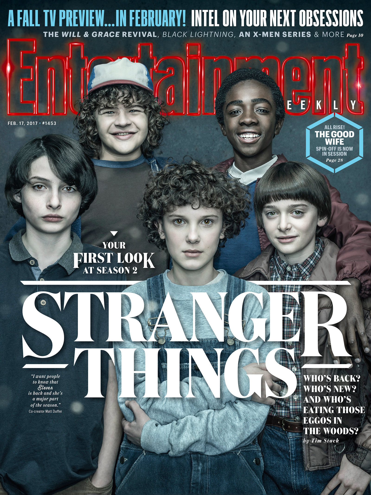

I was a high school teacher (history and civic education) in Israel, in mixed school for jewish and arabs, for more than 6 years before I came to Le Wagon. My goal is to start a high tech venture in my area of expertise and also to create a software for young kids to give them the opportunity to learn how to code.
My Favorite TV's Series For 2017 |
|
|---|---|
|  | InsecureA comedy serie that follows the awkward experiences and racy tribulations of a modern-day African-American woman. |
|  | The Handmaid's TaleA drama serie about that set in a dystopian future, a woman is forced to live as a concubine under a fundamentalist theocratic dictatorship. |
|  | Stranger ThingsA science fiction serie that follows teenager Clay Jensen, in his quest to uncover the story behind his classmate and crush, Hannah, and her decision to end her life. |